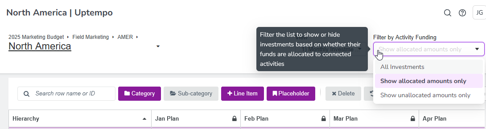
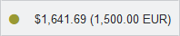

Search and filter investments
If you manage a very extensive investment plan, you have various options for filtering the displayed investent plan data according to your needs:
Search within an investment plan: In the search bar above the hierarchy you can enter a name or a line item ID. The line items displayed in the hierarchy are narrowed down to suitable matches by entering the first character.
Filter by approval status: Filtering by approval status allows you to gain a quick understanding of approved spend, pending requests, and see the current status of investments. This lets you view areas that have been approved to move forward, and adjust areas that require change.
Filter by scenarios: Scenario tags allow you to easily create and view different scenarios during planning to understand the impacts of a change in top-down allocation to the overall investment plan. When filtering by scenario, you reduce the displayed line items and placeholders in the hierarchy to those that match one (or several) scenarios.
Group investments by details panel attribute: After you have entered details for each line item on the details panel, you can use the Group by filter to display line items grouped according to their attribute details (for example by their assigned target group).
Filter investments by forecast status: If you use forecast status tags, you can see the total amounts in your investment plan that are forecasted, committed, or actually spent. This is a quick way to gain insight on the status of marketing costs to date.
Filter by activity funding: If your investments are linked to activities, you can see these investments and their amounts that are already allocated to activities (or the amounts not yet allocated) by using the Filter by Activity Funding options:

Hide or show rows without amounts: If you have created many investments, but have not entered planned or anticipated expenditures for each investment, you can use the Show $0 Rows option in the display settings above the investment grid. Select this option to get a clear view of investments that have associated amounts. When the filter is deselected, all investments that have no dollar value in any of the columns are hidden.
View original currency amounts: If you entered amounts in a different currency than the investment plan currency with multi-currency values, you can select the Show Original Currency option in the display settings above the investment grid to highlight cells where multi-currency entries have been made and, and to display the original currency amount alongside the converted plan currency amount:

{kind=link}